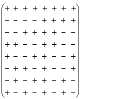
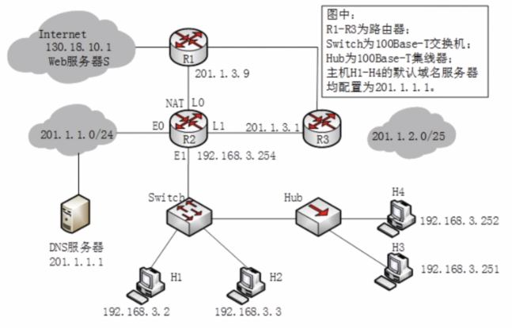
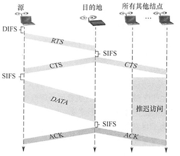
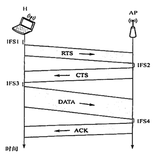

2022.08.13
[toc]
属于静态划分信道的方法
A.介质的带宽大于结合信号的位速率
B.介质的带宽小于单个信号的带宽
C.介质的位速率小于最小信号的带宽
D.介质的位速率大于单个信号的位速率
A.FDM实际能力更差
B.TDM可用于数字传输而FDM不行
C.FM技术不成熟
D.TDM能更充分地利用带宽
沃尔什向量

一个比特被分为m bit的码片(Chip)，m通常为64或128
每一个站被指派自己的码片序列(取m=8)，比如：
| 编码 | 码片序列 | |
|---|---|---|
| A的1 | 11110000 | 1，1，1，1，-1，-1，-1，-1 |
| A的0 | 00001111 | -1，-1，-1，-1，1，1，1，1 |
| B的1 | 11111111 | 1，1，1，1，1，1，1，1 |
| B的0 | 00000000 | -1，-1，-1，-1，-1，-1，-1，-1 |
CSMA要求，不同编码必须正交
发送端，A发送0，B发送1 $$ [-1,-1,-1,-1,+1,+1,+1,+1]\+[+1,+1,+1,+1,+1,+1,+1,+1]\= [0,0,0,0,2,2,2,2] $$ A接受端 $$ \frac{[0,0,0,0,2,2,2,2]\cdot [1,1,1,1,-1,-1,-1,-1]}{8}=-1 $$ B接受端 $$ \frac{[0,0,0,0,2,2,2,2]\cdot [1,1,1,1,1,1,1,1]}{8}=1 $$
扩频(Spread Specturm)
原因：一个码片有m位，原来发送比特速率为b bit/s，现在就需要扩充到mb bit/s，对应的频率域也需要扩充。
属于动态划分信道的方法
纯ALOHA协议
发送：想发就发
$$ S = G\cdot e^{-2G}\ S_{max}=S(0.5)=0.184 $$
时隙ALOHA协议
发送：时隙开始时发
$$ S = G\cdot e^{-G}\ S_{max}=S(0.5)=0.368 $$
小坑例题：10000个航空订票站在竞争使用单个时隙 ALOHA通道,各站平均每小时做18次请求,每个时隙是125μs。总通信负载约为多少? $$ G=\frac{10000\cdot 18\cdot 125μs}{3600s}=0.00625 次/s $$
例题：一组N个站点共享一个56kb/s的纯 ALOHA信道,每个站点平均每100s输出一个1000bit的帧,即使前一个帧未发送完也依旧进行。问N可取的最大值是多少? $$ \begin{align} 纯ALOHA信道利用率&=0.184\ 信道带宽B&=0.184\cdot56kHz=10.304kHz\ 单个站需要的带宽&=\frac{1000bit}{100s}=10Hz\ N_{max}&=\lfloor \frac{10304}{10}\rfloor=1030 \end{align} $$
“听”：监测电压摆动值
1-坚持CSMA
信道空闲：立刻传输
缺点:假如有两个或两个以上的站点有数据要发送,冲突就不可避免。
非坚持CSMA
信道空闲：立刻传输
细节例题：在CSMA的非坚持协议中,当媒体忙时,则(C)直到媒体空闲。 A.延迟一个固定的时间单位再侦听 B.继续侦听 C.延迟一个随机的时间单位再侦听 D.放弃侦听
p-坚持CSMA
| 种类 | 信道空闲 | 信道忙 |
|---|---|---|
| 1-坚持 | 直接发 | 一直监听直到空闲 |
| 非坚持 | 直接发 | （改进方案）过会儿监听看看是否空闲 |
| p-坚持 | （改进方案）概率p现在发，概率1-p下一时间槽发 | 过会儿监听看看是否空闲 |
概述
适用网络：总线型或半双工
先听再说，边说边听，冲突不说，随机重说
步骤
适配器从网络层获得一个分组,封装成以太网帧,放入适配器的缓存,准备发送。
在中止发送后,适配器就执行指数退避算法,等待一段随机时间后返回到步骤2。
争用期/冲突窗口/碰撞窗口：2τ (端到端传播时延的二倍)
帧长：
个人理解：争用期可能发送的最多内容是最小帧长。如果争用期时检测到碰撞，发送就会停止，接收端收到内容小于最小帧长说明没发完，直接丢弃；如果争用期时未检测到碰撞，会成功发送，帧长会大于最小帧长。
$$ 最小帧长=总线传播时延\cdot 数据传输速率\cdot 2 $$
| 以太网帧长 | 总数(Byte) | 数据部分(Byte) |
|---|---|---|
| 最短帧长 | 64 | 48 |
| 最大帧长 | 1518 | 1500 |
二进制指数规避算法/动态退避：
确定基本退避时间,一般取两倍的总线端到端传播时延2τ(即争用期)。
当重传达16次仍不能成功时,说明网络太拥挤,认为此帧永远无法正确发出,抛弃此帧并向高层报告出错！
例题
【2016统考真题】如下图所示,在Hub再生比特流的过程中会产生1.535s延时( Switch和Hub均为100Base-T设备),信号传播速率为200m/s,不考虑以太网帧的前导码,则H3和H4之间理论上可以相距的最远距离是(）

A.200m
B.205m
C.359m
D.512m $$ 100BaseT\to100Mbps\ 以太网\to64B\ $$
$$ \begin{align} RTT=传播时延+信号再生时延&=\frac{最短帧长}{发送速率}\ RTT=\frac{2x}{200m/s}+2\cdot1.535\mu s&=\frac{64B}{100MBps}\ \frac{x}{200m/s}=0.64\cdot8b\mu s-1.535\mu s&=1.025\mu s\ x&=205m \end{align} $$
【2010统考真题】某局域网采用CSMA/CD协议实现介质访问控制,数据传输速率为10Mb/s,主机甲和主机乙之间的距离是2km,信号传播速率是200000km/s。请回答下列问题,要求说明理由或写出计算过程
1)若主机甲和主机乙发送数据时发生冲突,则从开始发送数据的时刻起,到两台主机均检测到冲突为止,最短需要经过多长时间?最长需要经过多长时间(假设主机甲和主机乙在发送数据的过程中,其他主机不发送数据)? $$ \begin{align} t_{max}=RTT=\frac{2\cdot 2km}{200000km/s}=0.02ms\ t_{min}=RTT/2=\frac{2km}{200000km/s}=0.01ms \end{align} $$ 2)若网络不存在任何冲突与差错,主机甲总是以标准的最长以太网数据帧(1518字节向主机乙发送数据,主机乙每成功收到一个数据帧后立即向主机甲发送一个64字节的确认帧,主机甲收到确认帧后方可发送一个数据帧。此时主机甲的有效数据传输速率是多少(不考虑以太网的前导码)?【坑：以太网数据帧长1500】 $$ \begin{align} 【t_{数据}&=\frac{1518\cdot8}{10Mb/s}=1.2144 ms】错了！\ t_{数据}&=\frac{1500\cdot8}{10Mb/s}=1.2 ms\ t_{总}&=\frac{1518\cdot8+64\cdot8}{10Mb/s}+RTT=1.2856ms\ c&=\frac{1.2}{1.2856}\cdot10Mb/s=9.33Mb/s \end{align} $$
概述
适用网络：无线连接局域网（有线连接局域网——CSMA/CD）
不用CSMA/CD原因：1. 碰撞检测硬件花费大（接收信号强度低，信号强度变化范围大）2. “隐蔽站”问题：当终端A和C都检测不到信号,认为信道空闲时,同时向终端B发送数据帧,就会导致冲突。
802.11规定帧间间隔IFS
SIFS(短IFS):最短的IFS,用来分隔属于一次对话的各帧,使用SIFS的帧类型有ACK帧、CTS帧、分片后的数据帧,以及所有回答AP探询的帧等。

IFS详解
帧间间隔(IFS)是在媒体访问控制(MAC)子层中运行的帧传输之间的等待时间段，在该子层中，使用了具有CSMA/CA协议。IFS是最后一个帧的传输完成到下一帧的开始传输之间的时间段，除了可变的退避时间段。
- 缩小的帧间空间(RISF)
减少的帧间间隔是高优先级帧中使用的持续时间很短的帧间间隔，用于发送突发帧。RISF是在802.11e QoS修订版中引入的，RISF的持续时间仅为2μs。
当站点需要发送多个帧时，在各个帧之间引入RISF。它确保没有其他站点找到机会占用帧突发内的信道。
- 短帧间间隔(SISF)
短帧间间隔(SIFS)是无线设备在接收帧和响应帧之间所需的时间间隔。它用于分布式协调功能(DCF)方案中，这是用于防止冲突的强制性技术。
SIFS的持续时间等于射频(RF)，物理层收敛过程(PLCP)和MAC(介质访问控制)层的处理延迟的总和。
在IEEE 802.11网络中，SIFS是在确认帧和清除发送(CTS)帧传输之前和之后保持的帧间间隔。SISF的持续时间通常为10μs。
- PCF帧间空间(PISF)
点协调功能(PCF)是一种可选技术，用于防止集中控制的WLAN中发生冲突。PCF与强制性分布式协调功能(DCF)一起使用。
集中协调通信的接入点(AP)等待PIFS持续时间来掌握信道。由于PIFS小于DIFS持续时间，因此AP始终具有优先于其他站访问信道的权限。PISF是SISF和时隙时间之和。
- DCF帧间空间(DISF)
分布式协调功能(DCF)是一项强制性技术，用于防止基于IEEE 802.11的WLAN标准(Wi-Fi)中发生冲突。它是一种媒体访问控制(MAC)子层技术，用于使用带冲突避免的载波侦听多路访问(CSMA / CA)的区域。
使用DCF技术，站点需要先感知无线信道的状态，然后才能发出发送帧的请求。工作站在发送其请求帧之前应等待的时间间隔称为DCF帧间间隔(DIFS)。DISF计算为SISF与时隙时间的两倍。
- 任意帧间空间(AISF)
在任意帧间间隔中，根据访问类别(即要传输的数据类型)对站点进行优先级排序。在该方案中，在该站可以发送其帧之前，缩短或扩展了无线站的等待时间(等于AISF)。较高优先级的电台被分配较短的AISF。这意味着较高优先级的站必须等待较短的时间间隔才能发送其帧。这对于延迟至关重要的传输(例如视频流或语音流)特别重要。
AISF的计算公式为：AISF编号*时隙+ SISF。
- 扩展帧间空间(EISF)
扩展帧间间隔是在损坏帧的情况下除了强制DISF之外还使用的额外等待时间。
原文链接：https://www.gdyunjie.com/news/news1371.html
处理隐蔽站问题：RTS与CTS
CA的CD区别
| CSMA/CD | CSMA/CA | |
|---|---|---|
| 传输介质 | 总线式 | 无线局域网 |
| 检测方式 | 总线电压摆动值 | 能量检测ED、载波检测CS、能连载波混合检测 |
| 效果 | 可以检测但无法避免 | 只能尽量避免 |
| 发送数据时 | 检测冲突 | 不检测冲突 |
例题
小坑例题：【2020统考真题】在某个IEEE802.11无线局域网中,主机H与AP之间发送或接收CSMA/CA帧的过程如下图所示。在H或AP发送帧前等待的帧间间隔时间(IFS)中,最长的是( )

答案：IFS1。IFS1是DISF，剩下都是SIFS。
【2018全国联考】IEEE802.11无线局域网的MAC协议CSMA/CA进行信道预约的方法是( D )
A.发送确认帧
B.采用二进制指数退避
C.使用多个MAC地址
D.交换RTS与CTS帧
（属于动态划分信道的）
传数据步骤：
网络空闲时,环路中只有令牌帧在循环传递。
源站点传送完数据后,重新产生一个令牌,并传递给下一站点,以交出信道控制权。
适用类型：负载很高的广播信道
物理拓扑：不一定是环 逻辑拓扑：环
例题：在令牌环网中,当所有站点都有数据帧要发送时,一个站点在最坏情况下等待获得令牌和发送数据帧的时间等于( B )
A.所有站点传送令牌的时间总和
B.所有站点传送令牌和发送帧的时间总和
C.所有站点传送令牌的时间总和的一半
D.所有站点传送令牌和发送帧的时间总和的一半